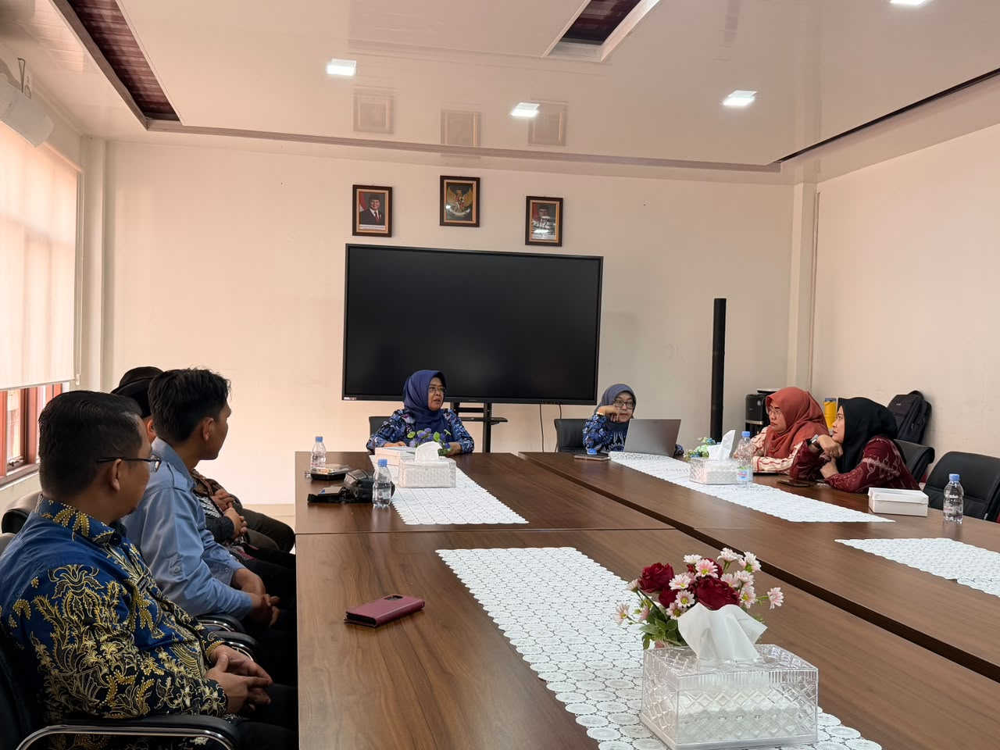
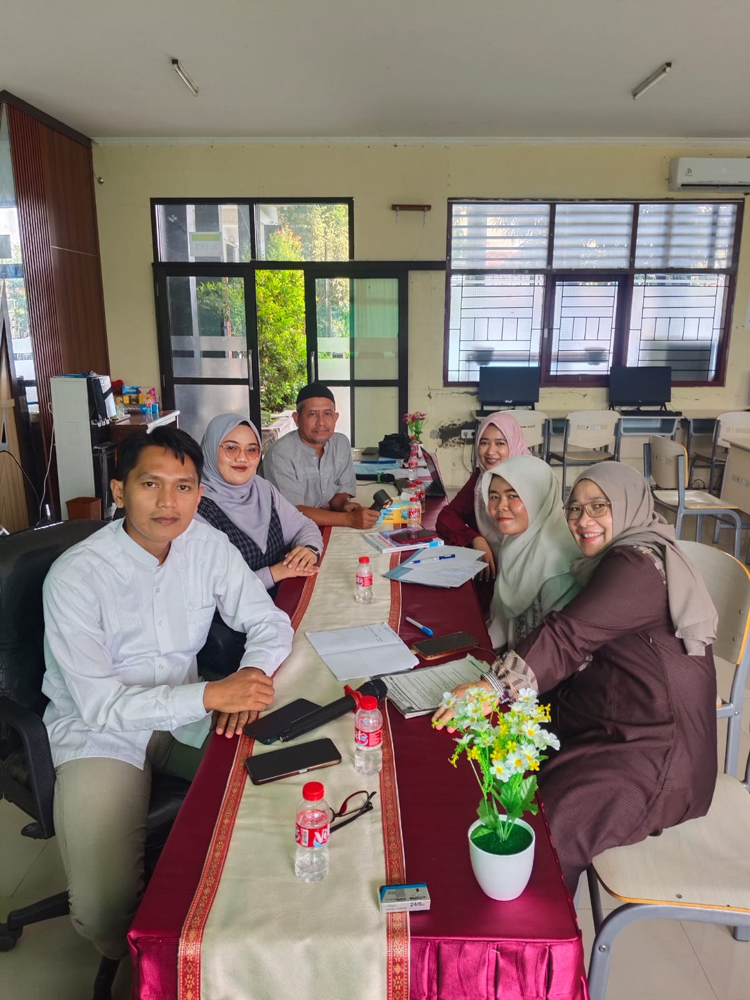

Karawang, 22 Juli 2026
MPLS Usai, Semangat KBM Dimulai
Masa Pengenalan Lingkungan Sekolah SMAN 2 Karawang Tahun 2026 telah usai, siswa kelas X bersiap menyongaong KBM penuh semangat
Dokumentasi Laporan Kegiatan Kedinasan, Pendampingan Numerasi, dan Aktivitas Organisasi Pendidikan Secara Transparan dan Berkala.
Karawang, 22 Juli 2026
Masa Pengenalan Lingkungan Sekolah SMAN 2 Karawang Tahun 2026 telah usai, siswa kelas X bersiap menyongaong KBM penuh semangat

Karawang, 3 Juli 2026
Menghadiri proses verifikasi oleh asesor dan hadir sebagai perwakilan sekolah sebagi mitra penelitian.

Karawang, 22 Juni 2026
Penyelarasan Alur Tujuan Pembelajaran dan pemetaan ulang materi kalkulus serta statistik persiapan TKA kelas XII.

Karawang, 21 Mei 2026
Kegiatan rapat pertemuan antar pengurus MGMP Matematika SMA Kabupaten Karawang dalam mempersiapkan program kerja terdekat